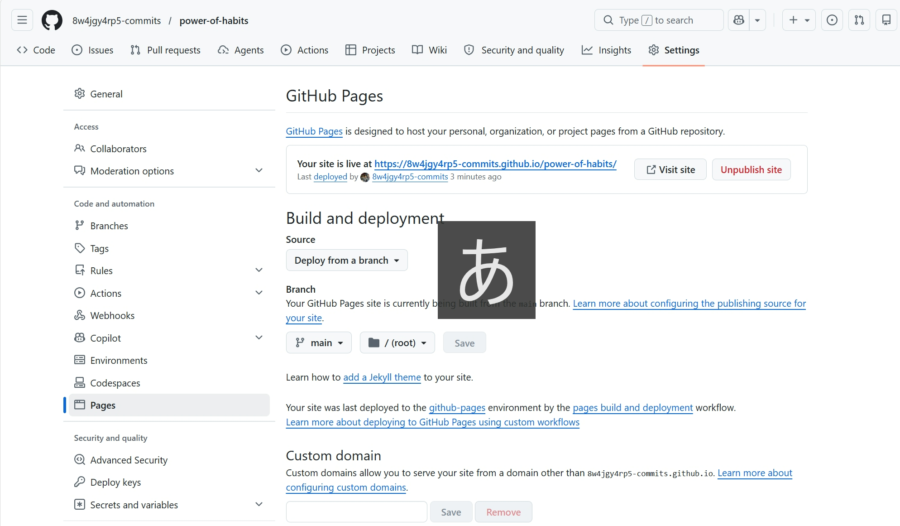
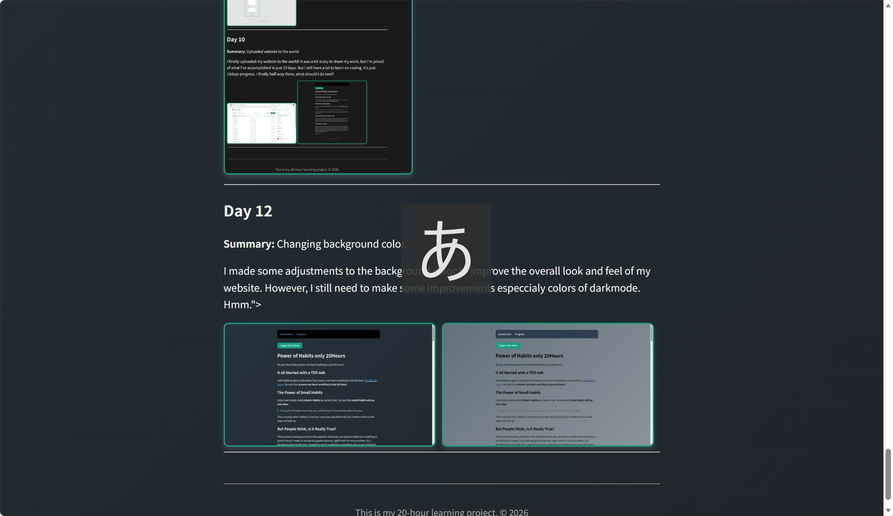

Do you know that anyone can learn anything in just 20 hours?
Josh Kaufman gave a talk about how anyone can learn anything in just 20 hours.
I also read a book called Atomic Habits by James Clear. He says that small habits add up over time.
If you get 1% better every day, you will end up 37 times better after one year.
This is exactly what I believe. One hour every day may feel small, but I believe these small steps will add up.
That sounds amazing, but here's the question: Seriously, can anyone really learn anything in just 20 hours? I mean, it sounds too good to be true, right? And I'm not sure either. So, I decided to put it to the test. I wanted to see if I could learn something new in just 20 hours!!
First, I had to choose something to learn. I wanted to pick something that was completely new to me, something I had no prior experience with. After some thought, I decided to learn how to code. I had always been fascinated by the coding, but I had never actually tried to learn it before. So, I thought it would be the perfect first choice for my 20-hour journey. My first challenge is coding this web site
This is the record of my 20-hour journey to learn coding, one hour at a time.
Summary: Set up VS Code and showed my first text in the browser.
I learned how HTML tags work. Seeing my own words on screen was exciting.

Summary: Added headings, links, and bold text.
I forgot to close a tag and everything broke. I learned how important closing tags are.

Summary: Used CSS for the first time.
I inserted images that you can see easily, but failed.


Summary:Linked multiple pages together.
I created a navigation menu that allows users to easily move between different sections of my website.It was huge steps!!
.jpeg)
Summary: Created a footer and added new pages.
I learned how to create a footer and add it to all my pages. And I created "Day 2" page.

Summary: Added a dark mode toggle.
I added a button that allows users to switch between light and dark themes. It was a fun way to learn about JavaScript and local storage.

Summary: Created a success vs. failure comparison page.
I created a new page that compares the progress I made with what I would have achieved if I hadn't started. It was a powerful way to see how far I've come.

Summary:Changed my plan.
I realized that there are too much pages to read articles. So, I decided to make a progress page and delete other pages.In a result, I had only two pages left.

Summary: Added some images to the progress page.
I added a few more images to make my progress page more visually appealing. But I still have a problem to post images. Take it easy.

Summary: Uploaded website to the world.
I finally uploaded my website to the world! It was a bit scary to share my work, but I'm proud of what I've accomplished in just 10 days. But I still have a lot to learn on coding. It's just 10days progress. I finally half-way there, what should I do next?


Summary: Connected index and progress pages.
I thought that connecting the index and progress pages would be simple and easy to see. So, I added links to navigate between them. From today, I've made my website more user-friendly.

Summary: Changing background color.
I made some adjustments to the background color to improve the overall look and feel of my website. However, I still need to make some improvements especcialy colors of darkmode. Hmm.


Summary: Fixed image sizes for both light and dark mode.
I fixed the image problems and made them easy to see in both light and dark mode. I also made the side-by-side images the same size.

